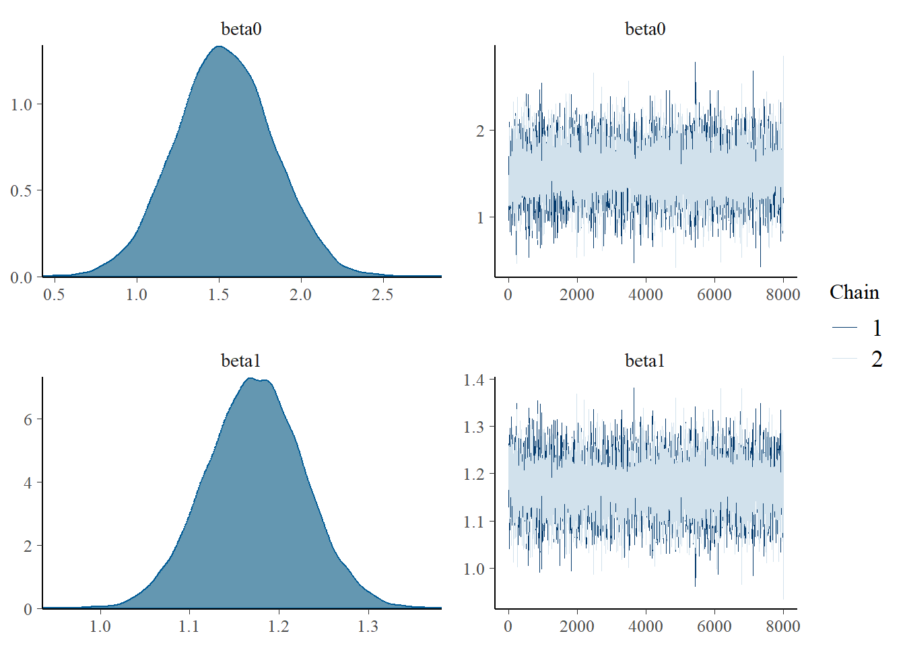

![]()
install.packages("rstan", dependencies = TRUE)Super basic introduction to Stan
Quarto
R
Academia
Software
Statistics
Abstract
The focus of this simple tutorial is to provide a brief introduction and overview about how to fit Bayesian models using Stan via R …
Keywords
Software, Statistics, Stan
The focus of this simple tutorial is to provide a brief introduction and overview about how to fit Bayesian models using Stan via R.
Prerequisites:
- The latest version of
R, which can be downloaded and installed for Windows, Mac or Linux OS from the CRAN website - I also strongly recommend to download and install Rstudio, an integrated development environment which provides an “user-friendly” interaction with
R(e.g. many drop-down menus, tabs, customisation options)
Preliminaries
What is Stan?
Stan provides full Bayesian inference for continuous-variable models through Markov Chain Monte Carlo methods such as the No-U-Turn sampler, an adaptive form of Hamiltonian Monte Carlo sampling
Stan is a program for analysis of Bayesian models using Markov Chain Monte Carlo (MCMC) methods (Gelman, Lee, and Guo (2015)). Stan is a free software and a probabilistic programming language for specifying statistical models using a specific class of MCMC algorithms known as Hamiltonian Monte Carlo methods (HMC). The latest version of Stan can be dowloaded from the web repository and is available for different OS. There are different R packages which function as frontends for Stan. These packages make it easy to process the output of Bayesian models and present it in publication-ready form. In this brief introduction, I will specifically focus on the rstan package (Stan Development Team (2018)) and show how to fit Stan models using this package.
Installing Stan and rstan
Unlike other Bayesian software, such as JAGS or OpenBUGS, it is not required to separately install the program and the corresponding frontend R package. Indeed, installing the R package rstan will automatically install Stan on your machine. However, you will also need to make sure to having installed on your pc a C++ compiler which is used by rstan to fit the models. Under a Windows OS, for example, this can be done by installing Rtools, a collection of resources for building packages for R, which is freely available from the web repository.
Next, install the package rstan from within R or Rstudio, via the package installer or by typing in the command line
The dependencies = TRUE option will automatically install all the packages on which the functions in the rstan package rely.
Basic model
Simulate data
For an example dataset, I simulate my own data in R. I create a continuous outcome variable \(y\) as a function of one predictor \(x\) and a disturbance term \(\epsilon\). I simulate a dataset with 100 observations. Create the error term, the predictor and the outcome using a linear form with an intercept \(\beta_0\) and slope \(\beta_1\) coefficients, i.e.
\[ y = \beta_0 + \beta_1 x + \epsilon \]
The R commands which I use to simulate the data are the following:
n_sim=100; set.seed(123)
x=rnorm(n_sim, mean = 5, sd = 2)
epsilon=rnorm(n_sim, mean = 0, sd = 1)
beta0=1.5
beta1=1.2
y=beta0 + beta1 * x + epsilon
n_sim=as.integer(n_sim)Then, I define all the data for Stan in a list object
datalist=list("y"=y,"x"=x,"n_sim"=n_sim)Model file
Now, I write the model for Stan and save it as a stan file named "basic.mod.stan" in the current working directory
basic.mod= "
data {
int<lower=0> n_sim;
vector[n_sim] y;
vector[n_sim] x;
}
parameters {
real beta0;
real beta1;
real<lower=0> sigma;
}
transformed parameters {
vector[n_sim] mu;
mu=beta0 + beta1*x;
}
model {
sigma~uniform(0,100);
beta0~normal(0,1000);
beta1~normal(0,1000);
y~normal(mu,sigma);
}
"Stan models are written using an imperative programming language, which means that the order in which you write the elements in your model file matters, i.e. you first need to define your variables (e.g. integers, vectors, matrices, etc.), the constraints which define the range of values your variable can take (e.g. only positive values for standard deviations), and finally define the relationship among the variables (e.g. one is a liner function of another).
A Stan model is defined by six program blocks:
Data (required). The data block reads external information – e.g. data vectors, matrices, integers, etc.
Transformed data (optional). The transformed data block allows for preprocessing of the data – e.g. transformation or rescaling of the data.
Parameters (required). The parameters block defines the sampling space – e.g. parameters to which prior distributions must be assigned.
Transformed parameters (optional). The transformed parameters block allows for parameter processing before the posterior is computed – e.g. tranformation or rescaling of the parameters.
Model (required). In the model block we define our posterior distributions – e.g. choice of distributions for all variables.
Generated quantities (optional). The generated quantities block allows for postprocessing – e.g. backtranformation of the parameters using the posterior samples.
For this introduction I consider a very simple model which only requires the specification of four blocks in the Stan model. In the data block, I first define the size of the sample n_sim as a positive integer number using the expression int<lower=0> n_sim; then I declare the two variables y and x as reals (or vectors) with length equal to N. In the parameters block, I define the coefficients for the linear regression beta0 and beta1 (as two real numbers) and the standard deviation parameter sigma (as a positive real number). In the transformed parameters block, I define the conditional mean mu (a real vector of length N) as a linear function of the intercept beta0, the slope beta1, and the covariate x. Finally, in the model block, I assign weakly informative priors to the regression coefficients and the standard deviation parameters, and I model the outcome data y using a normal distribution indexed by the conditional mean mu and the standard deviation sigma parameters. In many cases, Stan uses sampling statements which can be vectorised, i.e. you do not need to use for loop statements.
To write and save the model as the text file “basic.mod.stan” in the current working directory, I use the writeLines function
writeLines(basic.mod, "basic.mod.stan")Pre-processing
Define the parameters whose posterior distribtuions we are interested in summarising later and set up the initial values for the MCMC sampler in Stan
params=c("beta0","beta1")
inits=function(){list("beta0"=rnorm(1), "beta1"=rnorm(1))}The function creates a list that contains one element for each parameter, which gets assigned a random draw from a normal distribution as a strating value for each chain in the model. For simple models like this, it is generally easy to define the intial values for all parameters in the object inits which is then passed to the stan function in rstan. However, for more complex models, this may not be immediate and a lot of trial and error may be required. However, Stan can automatically select the initial values for all parameters randomly. This can be achieved by setting inits="random", which is then passed to the stan function in rstan.
Before using rstan for the first time, you need to load the package, and you may want to set a random seed number for making your estimates reproducible
library(rstan)
set.seed(123)Fit the model
Now, we can fit the model in Stan using the stan function in the rstan package and save it in the object basic.mod
basic.mod<-stan(data = datalist, pars = params, iter = 9000,
warmup = 1000, init = inits, chains = 2, file = "basic.mod.stan")NA
NA SAMPLING FOR MODEL 'anon_model' NOW (CHAIN 1).
NA Chain 1:
NA Chain 1: Gradient evaluation took 2.2e-05 seconds
NA Chain 1: 1000 transitions using 10 leapfrog steps per transition would take 0.22 seconds.
NA Chain 1: Adjust your expectations accordingly!
NA Chain 1:
NA Chain 1:
NA Chain 1: Iteration: 1 / 9000 [ 0%] (Warmup)
NA Chain 1: Iteration: 900 / 9000 [ 10%] (Warmup)
NA Chain 1: Iteration: 1001 / 9000 [ 11%] (Sampling)
NA Chain 1: Iteration: 1900 / 9000 [ 21%] (Sampling)
NA Chain 1: Iteration: 2800 / 9000 [ 31%] (Sampling)
NA Chain 1: Iteration: 3700 / 9000 [ 41%] (Sampling)
NA Chain 1: Iteration: 4600 / 9000 [ 51%] (Sampling)
NA Chain 1: Iteration: 5500 / 9000 [ 61%] (Sampling)
NA Chain 1: Iteration: 6400 / 9000 [ 71%] (Sampling)
NA Chain 1: Iteration: 7300 / 9000 [ 81%] (Sampling)
NA Chain 1: Iteration: 8200 / 9000 [ 91%] (Sampling)
NA Chain 1: Iteration: 9000 / 9000 [100%] (Sampling)
NA Chain 1:
NA Chain 1: Elapsed Time: 0.04 seconds (Warm-up)
NA Chain 1: 0.277 seconds (Sampling)
NA Chain 1: 0.317 seconds (Total)
NA Chain 1:
NA
NA SAMPLING FOR MODEL 'anon_model' NOW (CHAIN 2).
NA Chain 2:
NA Chain 2: Gradient evaluation took 6e-06 seconds
NA Chain 2: 1000 transitions using 10 leapfrog steps per transition would take 0.06 seconds.
NA Chain 2: Adjust your expectations accordingly!
NA Chain 2:
NA Chain 2:
NA Chain 2: Iteration: 1 / 9000 [ 0%] (Warmup)
NA Chain 2: Iteration: 900 / 9000 [ 10%] (Warmup)
NA Chain 2: Iteration: 1001 / 9000 [ 11%] (Sampling)
NA Chain 2: Iteration: 1900 / 9000 [ 21%] (Sampling)
NA Chain 2: Iteration: 2800 / 9000 [ 31%] (Sampling)
NA Chain 2: Iteration: 3700 / 9000 [ 41%] (Sampling)
NA Chain 2: Iteration: 4600 / 9000 [ 51%] (Sampling)
NA Chain 2: Iteration: 5500 / 9000 [ 61%] (Sampling)
NA Chain 2: Iteration: 6400 / 9000 [ 71%] (Sampling)
NA Chain 2: Iteration: 7300 / 9000 [ 81%] (Sampling)
NA Chain 2: Iteration: 8200 / 9000 [ 91%] (Sampling)
NA Chain 2: Iteration: 9000 / 9000 [100%] (Sampling)
NA Chain 2:
NA Chain 2: Elapsed Time: 0.041 seconds (Warm-up)
NA Chain 2: 0.327 seconds (Sampling)
NA Chain 2: 0.368 seconds (Total)
NA Chain 2:Different packages are available to perform diagnostic checks for Bayesian models. Here, I install and load the bayesplot package (Gabry and Mahr (2017)) to obtain graphical diagnostics and results.
install.packages("bayesplot")
library(bayesplot)For example, density and trace plots can be obtained by typing
mcmc_combo(as.array(basic.mod),regex_pars="beta0|beta1")
Both types of graphs suggest that there are not issues in the convergence of the algorithm (smooth normal densities and hairy caterpillar graphs for both MCMC chains).
Conclusions
This tutorial was simply a brief introduction on how simple linear regression models can be fitted using the Bayesian software Stan via the rstan package. Although this may seem a complex procedure compared with simply fitting a linear model under the frequentist framework, however, the real advantages of Bayesian methods become evident when the complexity of the analysis is increased (which is often the case in real applications). Indeed, the flexibility in Bayesian modelling allows to account for increasingly complex models in a relatively easy way. In addition, Bayesian methods are ideal when the interest is in taking into account the potential impact that different sources of uncertainty may have on the final results, as they allow the natural propagation of uncertainty throughout each quantity in the model.
References
Gabry, J, and T Mahr. 2017. “Bayesplot: Plotting for Bayesian Models.” R Package Version 1.
Gelman, Andrew, Daniel Lee, and Jiqiang Guo. 2015. “Stan: A Probabilistic Programming Language for Bayesian Inference and Optimization.” Journal of Educational and Behavioral Statistics 40 (5): 530–43.
Stan Development Team. 2018. “RStan: The R Interface to Stan.” http://mc-stan.org/.